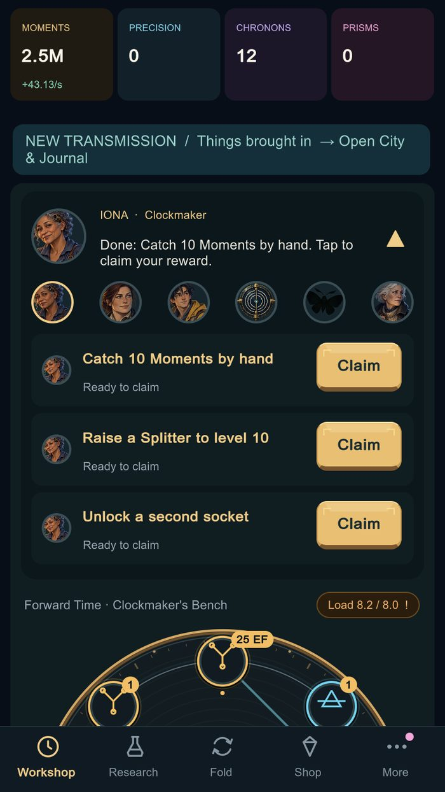
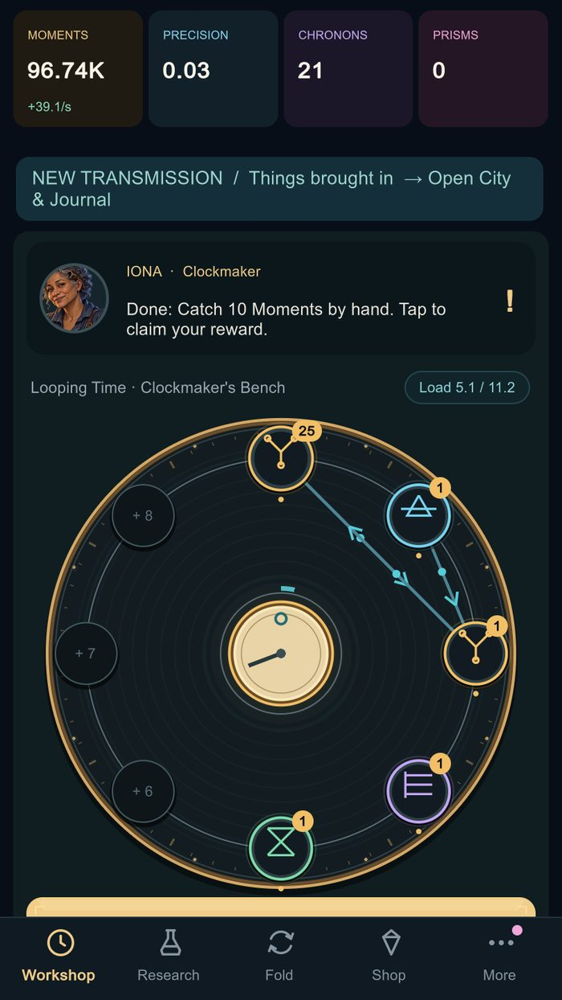

The Last Second Workshop
Idle incremental game · AndroidOne second is left. Build a workshop inside it.
The Last Second Workshop is an idle and incremental game for your phone. You look after a clockmaker's workshop in the city of Meridia, where time has stopped one second before midnight. You catch moments of time, build machines that turn them into more, and work towards getting the city moving again.
Why people stay
- A workshop you design. Twelve kinds of machine sit on rings of sockets. Where you put them and how you route them into each other makes a big difference to output.
- A prestige system with choices. When your workshop is ready you Fold it, rebuild under a new law of time, and keep your permanent upgrades.
- A story that arrives as you grow. Transmissions from a signal operator, a courier and a missing clockmaker come in as you progress. See the story so far.
- No pressure. Your workshop keeps producing while you are away, and there are no timers that punish you. Read offline progress.
Where to begin
| If you want to... | Read |
|---|---|
| Understand the premise | The held second |
| Play your first ten minutes well | Getting started |
| Know what each machine does | Machines |
| Grow faster | Tips for faster progress |
| Look something up | FAQ and Glossary |
The shape of the game
- Catch the pulse on the central clock to gather Moments, and let your Splitters gather them for you.
- Upgrade and build machines, open new sockets, and route machines into chains.
- Keep the board stable. Too much work for the board to bear slows every machine. See load and stability.
- Fold once you have earned enough, collect Chronons, and spend them on permanent research.
- Explore new laws of time: Forward, Looping and Branching, optional Trials, and the places in the atlas of Meridia.
Note: Pages with later regions and the ending are marked as spoilers, so you can read everything else freely.
The game is free to play on Google Play, runs fully offline, and is available in twelve languages. Nothing you might buy is needed to finish the story.
Start here
The held second
The premise, the opening pages, and the first people and creatures you meet in a city stopped at 23:59:59.

Getting started
Your first ten minutes in the workshop, step by step, and what the game reveals as you go.
Tips for faster progress
Practical, rule-backed advice for the early game, the mid game and every Fold.
Systems
The core loop
How Moments, Precision, Chronons and Prisms fit together, and how one run turns into the next.
Catching Moments
Tapping, Rhythm, Surges, Golden seconds, Resonance and the catch upgrades, explained with their real numbers.
Machines
All twelve machines, what each does, when it unlocks, and how to use it well.

Rings, sockets and routes
How the three rings of sockets work, how to expand them, and the rules for routing one machine into another.
Load and stability
Why a busy board slows down, how to read the Load meter, and the ways to give your workshop room to breathe.
Research
Permanent research bought with Chronons, run research bought with Precision, and which upgrades to take first.
Modifications and blueprints
The five machine modifications and six workshop blueprints, with when each unlocks and what it trades off.
Folds
The prestige system explained. When to Fold, what resets, what you keep, how Chronons are earned and how each Fold changes the next run.

Temporal laws
Forward, Looping and Branching Time, how each one changes the way machines connect, and how to build for each.
Discoveries and experiments
All 24 discoveries and how to earn them, plus the four Experiment Board challenges.

Trials of the Held Second
Ten optional rules you can take on for one run, earn a seal for, and master for up to three stars each.
Daily tasks
Three small tasks a day, a chest for finishing them, and why missing a day costs you nothing.
Offline progress and automation
How your workshop keeps working while you are away, how to extend the limit, and what runs by itself.
Story and people
Characters
Iona, Mara, Senn, the Counter and the lantern moth: who they are, when you meet them, and the goals they set.
Regions

Atlas of MeridiaSpoilers
Every place the story visits, what opens each chapter, and how the tale of the held second ends.
The Overwound QuarterSpoilers
A four-chapter story region built around load. How to open it, the three goals, and what the chapters say.
The Mending RoomsSpoilers
A five-chapter story region where each repair is a workshop arrangement to diagnose, with the three solutions explained.
Reference
Frequently asked questions
Quick answers about progress, Folds, offline play, accessibility and what is free.
Glossary
Every term the workshop uses, from Anchor to Trial, with links to the pages that explain it fully.
From the same world
Meridia is the most visible landmark in the Evenwold. Here is how the other games see it.